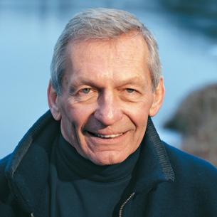
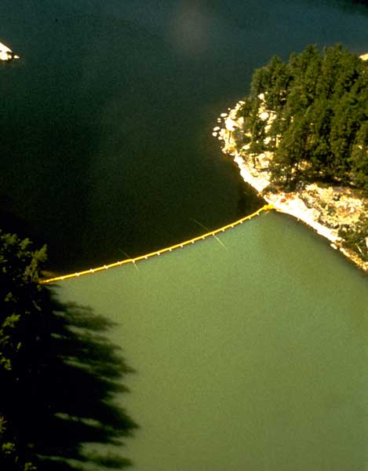

Module 4—Properties of Solutions
 Reflect and Connect
Reflect and Connect
Dissolved Nutrients in Lakes

© Creative Services, University of Alberta
Dr. David Schindler is an internationally renowned ecologist at the University of Alberta. He has conducted extensive research on how human activities can damage freshwater reserves.
“Of all the environmental problems we face today, fresh water is probably the most important. Our lakes and streams are Mother Nature’s sewers, and the water tends to reflect everything we do. There exists here a myth of abundance with regard to fresh water. We are told that Canada has more fresh water than any other country. In fact, there is a lack of fresh water available to the most populated parts of Canada, and most fresh water is in the north or flowing towards the north. Alberta, in particular, has a water deficit: evaporation is greater than precipitation.”
In the late 1960s, Dr. Schindler conducted research in the ELA (Experimental Lakes Area), a set of 58 lakes in the Precambrian Shield of northwestern Ontario. This set of lakes is reserved for large-scale experiments of ecosystem stressors. One of Dr. Schindler’s main contributions to ecology was his research on the effect of phosphorus-based fertilizers and detergents on lakes. Dr. Schindler helped show that not all nutrients dissolved in water are necessarily beneficial—they can have unforeseen consequences when imposed on delicate ecosystems.
| ELA Lake 226 was the site of a visually spectacular experiment. The lake was divided into two approximately equal portions using a plastic divider curtain. Carbon and nitrogen were added to one half of the lake, while carbon, nitrogen and phosphorus were added to the other half. For eight consecutive years, the side receiving phosphorus developed eutrophic algal blooms, while the side receiving only carbon and nitrogen did not (see photo, below). However, after only two years, this experiment convinced even the skeptics that phosphorus is the key nutrient. |  |
 Self-Check
Self-Check
SC 9. When a solid is dissolved in solution, it seems to disappear. Why does this happen? Is dissolving a physical change or chemical change?
SC 10. Explain the difference between an endothermic process and an exothermic process.
SC 11. Is it theoretically possible to dissolve a substance without using energy?
SC 12. Why is it important to consider the breaking of hydrogen bonds between water molecules when calculating the net energy of dissolving a solid?
Self-Check Answers
SC 9. Dissolving occurs when the molecules of a liquid surround the solute, resulting in dissociation, ionization, or dispersion. Dissolving a substance is a physical change since no new substances are produced.
SC 10. An endothermic process draws energy from the surroundings. An observation of many endothermic changes is a reduction in the temperature of the system or matter being investigated. For example, water evaporation is endothermic. Your skin feels colder when water evaporates because energy is drawn from your skin to fuel the evaporation.
An exothermic process releases energy to the surroundings, increasing the temperature. For example, the chemical reaction in a heat pack is exothermic. The surplus energy warms up the solution and the heat pack feels hot.
SC 11. No. The act of dissolving always requires energy to dissociate, ionize, or disperse a substance.
SC 12. Water molecules do not simply float around in isolation; they are closely packed with other water molecules and experience intermolecular forces. Before a group of water molecules can come together to surround and dissolve a solute, they must first break free from the hydrogen bonds with adjacent water molecules. Therefore hydrogen bonds between water molecules can be considered to have attractive forces between them, some of which must be overcome in order for associations to occur between water molecules and the solute particles. Given the large number of water molecules involved in this process, the energy can be significant even though it is typically far less than the energy required to break the ionic bond.
 Module 4: Lesson 2 Assignment
Module 4: Lesson 2 Assignment
To complete your assignment as an online quiz, click on Module 4 Lesson 2 Assignment in the "Quizzes".
To complete your assignment as an MSWord document, click Module 4 Assignment 2.